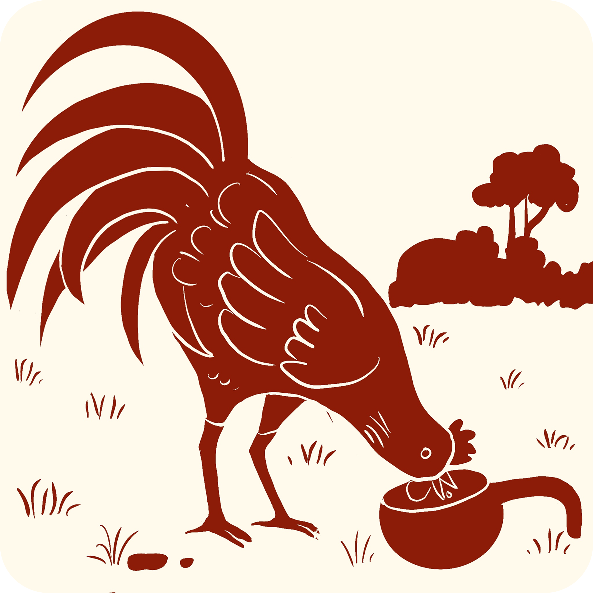

The Kai Ronka and the champion's life in Tulu Nadu

In Tulu Nadu, Kori Katta (in Tulu) or Korida Katta / Koli Anka (in Kannada) — cockfighting wasn't just a sport. It was an art form and a tradition. Fighting cocks were treated like champion athletes! They had special food, special training, and even their own astrology book called Kukkuta Panchanga that told their owners which day was lucky for a fight!
Look at this small coconut shell cup. It's called "Kai Ronka," and it was used specifically to give water to fighting cocks.
Why couldn't the rooster just drink from any old bowl? Because these weren't ordinary chickens — they were respected warriors. The Kai Ronka was carefully made so the rooster could drink comfortably without spilling water or getting its feathers wet. Think of it this way: if you were training for the Olympics, you'd want proper equipment, right? The fighting cock got the same respect!
Fighting cocks belonged to educated people from communities like Banta and Billava. These roosters were fed paddy — but of far higher quality than what regular chickens received.
The care given to these birds shows how deeply Tulu culture valued discipline, respect, and tradition — even for animals!